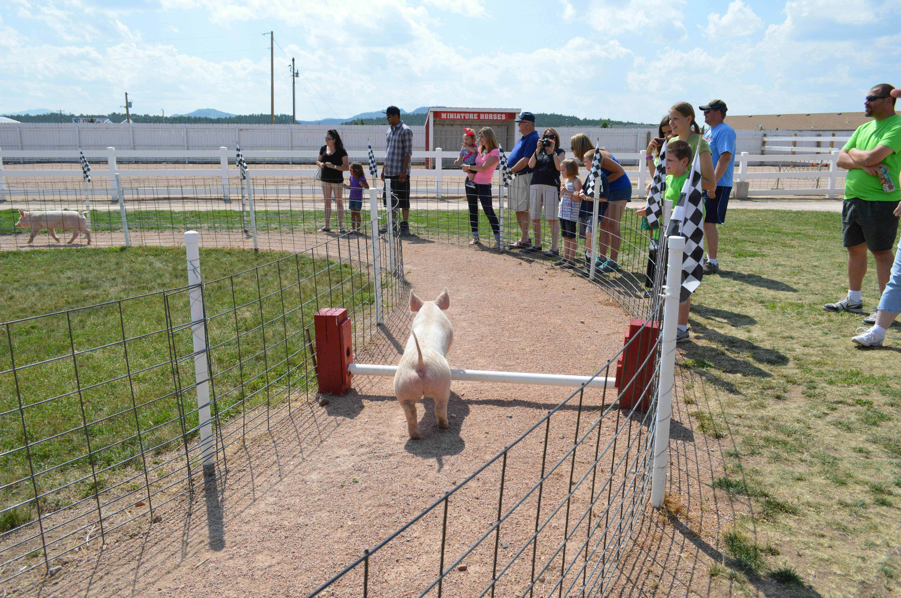

Local Festivals
Experience the heart of Macon County through vibrant festivals celebrating our music, food, history, and mountain culture.

Franklin Fall Festival
Date: October 12–14, 2025
Downtown Franklin comes alive with music, crafts, food trucks, and a classic car show.
More InfoMountain Music Fest
Date: July 20, 2025
Celebrate bluegrass and folk traditions with live performances and local vendors in the Highlands.
More InfoApple Festival
Date: September 7–8, 2025
Enjoy fresh mountain apples, homemade pies, live demos, and family-friendly fun!
More InfoWant to Get Involved?
We welcome volunteers, performers, and vendors! Help us make Macon County festivals memorable.
Sign Up to Volunteer Apply as a Vendor

Festival Tips & Info
- Most events are free and family-friendly.
- Bring cash — some vendors may not accept cards.
- Parking is available near festival entrances.
- Follow Macon County’s Facebook page for updates.
Festival Locations
- Downtown Franklin – Main Street & Stewart St
- Highlands Event Park – 25 Music Trail Road
- Greenway Park – 190 Siler Farm Rd
Festival Inquiries
(828) 555-1234
events@maconnc.org